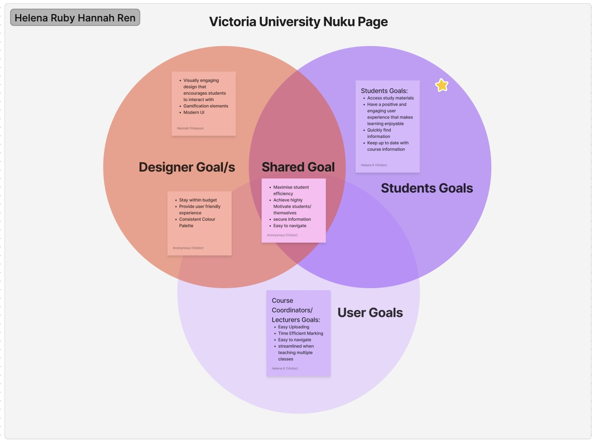

In the tutorial this week, we continued the evolution of website design from 1998 to 2008. During this period, advancements like Wikipedia, scalable vector graphics (SVGs), responsive web design for various screen sizes, WordPress CMS, and the first social media platforms were introduced. YouTube and LinkedIn are platforms I am very familiar with, and I was shocked to see how far their web designs have come. Most notably, the announcement of the first iPhone was made in 2007 using lots of skeuomorphic design, which mimics real-life textures.
I listed some of the most significant changes I noticed in YouTube's web design and why these changes may have occurred to better the users' experience:
We then discussed more about Assignment 1 and explored the use of Venn diagrams within UX design. I learned that Venn diagrams are a design tool that establishes common goals between designers and users. To exercise this new tool, we were placed in breakout rooms to complete a quick task; my group's work can be seen in the image below.
The HTML pre-recorded tutorial taught us how to create a simple, functional webpage with hyperlinked text and images organised with ordered and unordered lists. The tutorial provided practical insights into HTML basics, emphasising anchor tags and list elements. This tutorial lays a solid foundation for my future code development.